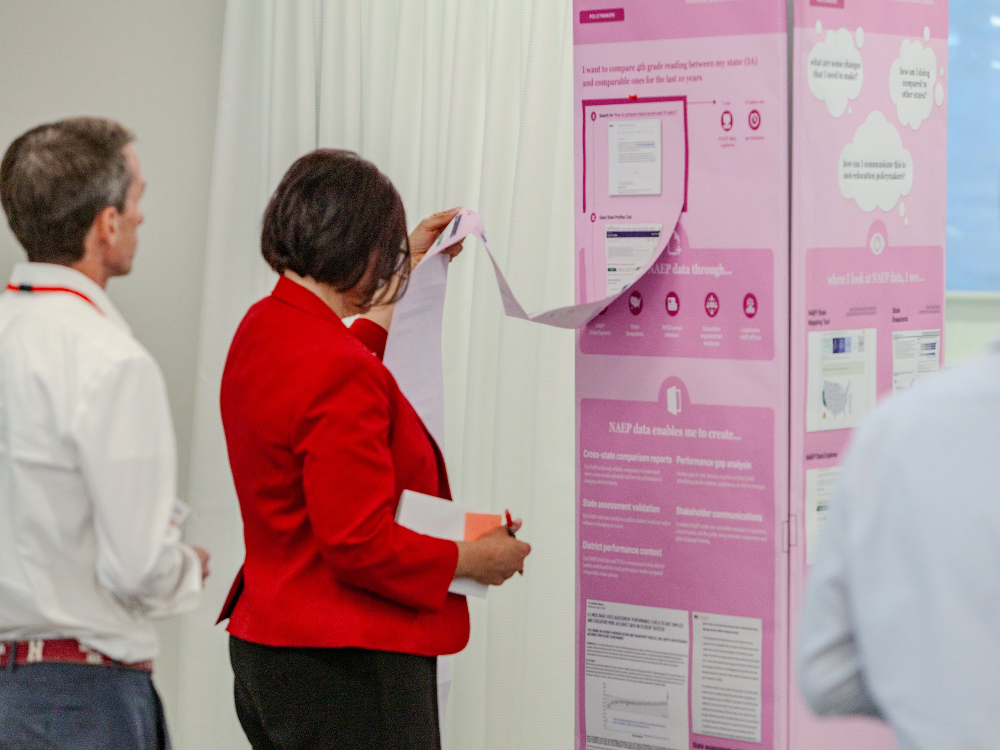
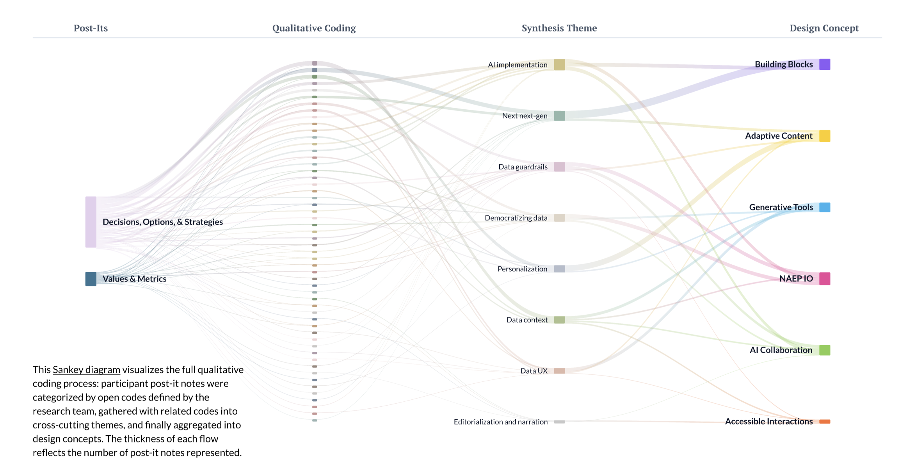
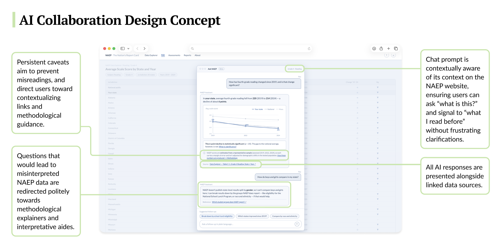
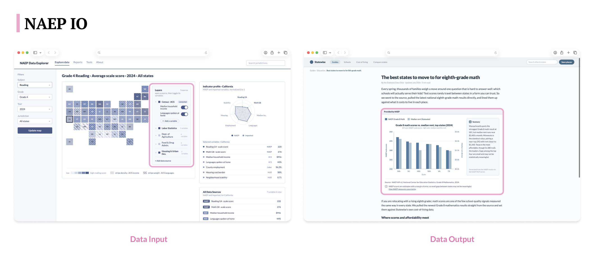

Designing for data in the open
Strategic consulting for the U.S. Department of Education on a national platform serving 500K+ students’ data: research, plus designing and building first-of-their-kind data visualization prototypes for government education testing, with LLMs surfacing prediction uncertainty over longitudinal data. Ongoing through December 2026.
The problem
The client is the United States Department of Education, which runs a national education data program informing policy at the federal, state, district, and school level and touching over 500,000 students. The engagement covers the next iteration of the program’s data infrastructure, with a mandate to identify meaningful AI integration opportunities. My work spans research, design, and build: I am designing first-of-their-kind data visualization prototypes for government education testing and applying LLMs to surface prediction uncertainty over longitudinal data, building personalized tools for researchers and policymakers.
The scope had to be defined before any of that could happen. Thirty-plus stakeholders spanning federal, state, and district levels each had different priorities, different mental models of what design could accomplish, and different assumptions about what this engagement would produce. The first job was getting them aligned on what the engagement was actually for.
How do you present national assessment data so that researchers, policymakers, and the public can actually use it, and get external probabilistic AI systems to accurately and reliably reference and work with the data?
Constraints
| Timeline | Synthesis had to be fast enough to inform live stakeholder conversations, not delivered weeks later. |
|---|---|
| Stakeholders | 30+ federal, state, and district stakeholders, each with institutional priorities that felt non-negotiable. |
| Data / domain | A vast secondary literature to synthesize, plus public open-data dynamics outside anyone’s control. |
| Business need | An undefined scope risked delivering nothing usable. The work needed a defensible, prioritized direction before design and build could start. |

Key decisions
With no scope and a politically complex group, every choice had to hold up to stakeholders who could each veto it. Eight decisions turned an open mandate into a defensible direction.
With standard labels like “high priority,” thirty stakeholders would have ranked everything equally and the workshop would have decided nothing. Rewriting the criteria language forced real differentiation and surfaced actual tradeoffs. The scope it produced has held for the rest of the engagement.
The workshop produced a clear commitment: focus on meaningful AI integration and real data use cases. Everything else was explicitly deferred, in writing, with stakeholders in the room.
Rather than accept the synthesis bottleneck on a vast secondary literature, I built an automation workflow converting spreadsheet rows into structured sources for NotebookLM. The team got synthesis fast enough to inform live stakeholder conversations.
The stakeholder interviews were too sensitive to send to a third-party API, and too valuable to leave as static transcripts. I built a fully local RAG pipeline — transcripts embedded into a vector database, retrieval feeding a local LLM — so the team could interrogate synthesized stakeholder perspectives on demand, with the data never leaving the machine. When others needed access, I exposed the app through a tunnel instead of moving the data.
Stakeholders wanted to prevent misreads by gating downloads and adding caveats to every chart. It's an understandable instinct, and years of coverage show it doesn't work: once the data is public, interpretation belongs to whoever opens the file. Rankings get cherry-picked, headlines outrun the methodology, and no disclaimer survives contact with a deadline. So we stopped fighting it and started designing for it.
That reframe became the design brief for the AI layer. Uncertainty is drawn inside the visualization itself, and methodological context appears at the point of use. When a query invites misinterpretation, the LLM redirects it toward linked sources and plain-language explainers rather than answering badly. Friction moved into the answers, where it helps, and out of the access, where it never did.
The team conducted primary research with 20+ stakeholders and studied what people were actually building with the publicly available data, grounding the AI integration strategy in real use cases instead of model capability.
A second workshop with 30+ high-level stakeholders translated research findings into solution specifications, keeping stakeholder input directly shaping the prototype direction across a politically complex group.

How I measured success
The engagement is still live, so the measures so far are alignment and grounding rather than a usage metric. The alignment measure was concrete: thirty-plus stakeholders leaving with a shared, prioritized scope that did not exist when the engagement started, produced live in facilitated workshops rather than asserted in a deck afterward.
The grounding measure was the research base behind every recommendation: primary research with 20+ stakeholders plus a study of what people actually build with the publicly available data, so the AI strategy could be defended with evidence of real demand.

The solution
The engagement has produced prototypes and implementation roadmaps for how the data is stored and presented across its different user types, grounded in actual user needs, data visualization best practices, and the wide range of data literacy across the stakeholder population. I am designing and building the prototypes themselves, including LLM-powered views that surface prediction uncertainty over longitudinal data and personalized tools for researchers and policymakers. Underneath the interface work sits the data plumbing: schemas for how assessment results and their uncertainty are structured across user types, and the retrieval layer that grounds every AI response in the released data rather than the model’s memory.
The AI integration strategy was scoped to specific, researched use cases. It came paired with recommendations for data structuring, visualization, and analysis, so the strategy has a concrete path to implementation rather than living as a slide.


Outcomes
Stakeholders left with a shared understanding of open data dynamics and a concrete set of prioritized next steps. Work continues through December 2026.